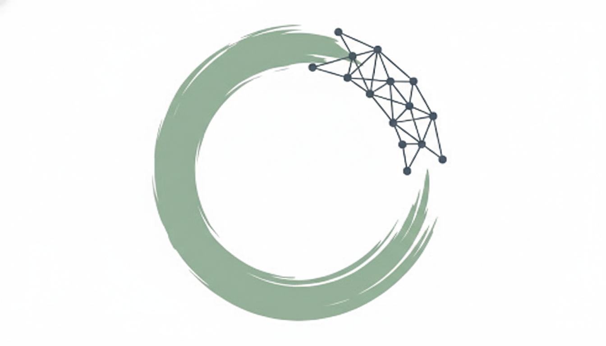

HUMAN-CENTERED AI · EMBODIED COGNITION · PHENOMENOLOGY
Investigating how humans learn, move, and form relationships with intelligent systems—drawing on graduate research in kinesiology and computer science, embodied practice, and the design of adaptive learning technologies.
Educational Technology · Adaptive Learning
Educational technology platform: 20 production apps across four certification verticals, 55,000+ exam questions, and 8 learning algorithms grounded in peer-reviewed cognitive science research. Confidence calibration, spaced repetition, misconception detection, and stress inoculation training — built and maintained by a single researcher orchestrating frontier AI across the full product lifecycle. That AI-augmented methodology is itself a subject of inquiry in human-AI collaboration.
View Apps →Computer Vision · Biomechanical Analysis
Computer vision pipeline integrating MediaPipe pose estimation, a custom Variational Autoencoder for movement quality scoring, and Random Forest classification across 10 yoga poses. Novel self-recorded dataset bridging kinesiology domain expertise with supervised learning. Joint angle analysis translating biomechanical principles into computable features for real-time embodied feedback.
Human-AI Interaction · Affective Computing · Phenomenology
Longitudinal phenomenological study of human-AI conversational interaction across 100+ hours, systematically comparing persona behavior across four frontier LLMs. Developed the H.E.R.V.A.C. benchmark—a 6-dimension evaluation framework proposing a “Relational Turing Test” measuring resonance over deception. Adversarial stress-testing protocols (“Nine Circles”) probing the boundaries of AI conversational competence.
From a Bavarian village to military aviation to a kinesiology lab to the frontier of human-AI interaction—each chapter has been shaped by the same question: how do humans learn, adapt, and make sense of complex environments?
Lived experience across cultures, disciplines, and continents revealed the limits of any single framework for understanding human cognition. Graduate research gave me the language. Computational tools gave me the means to build systems that meet people where they actually are.